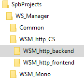
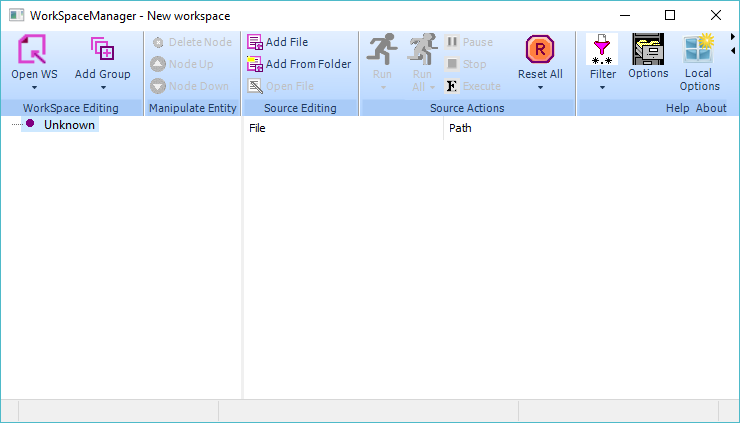
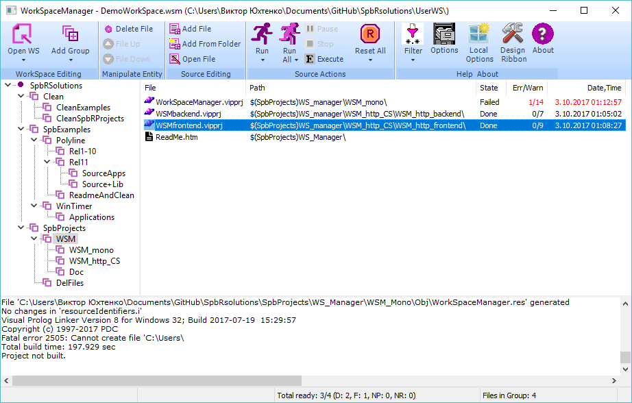
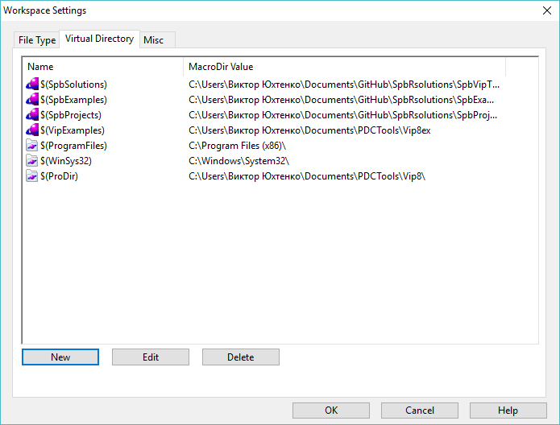

Copyright (c) Prolog Development Center SPb
Author: Viktor Yukhtenko
How to build and run WorkSpaceManager
The
WorkSpaceManager application is designed to organize a working
environment that includes many projects and companion files of various
types.
The application is written in the language of Visual
Prolog v.8. A commercial version of this system is required to compile
and build the project.
The application is distributed under the GNU GPL v.3 license, that is without restrictions on the application.
The application source code is an integral part of the SpbRsolutions v.1.0 source code array.
To build executable applications, you need classes from the SpbVipTools toolkit of the same version.
Location of executable applications
The
output codes allow you to build two types of applications running on MS
Windows (the operation is tested in Windows 10 environment):
- Mono-application: WorkSpaceManager.exe
- An application consisting of two executable parts - http-client and http-server:
- WSM_http_backend.exe
- WSM_http_frontend.exe
All these applications are included in SpbRsolutions and allow you to use them without compiling projects.
The mono WorkSpaceManager.exe is located in the
SpbRsolutions\SpbVipTools\Bin directory
Http-Server WSMbackend.exe is located in the directory
SpbRsolutions\SpbProjects\WS_Manager\WSM_http_CS\WSM_http_backend\Exe
The Http-Client WSMfrontend.exe is located in the directory
SpbRsolutions\SpbProjects\ WS_Manager\WSM_http_CS\WSM_http_frontend\Exe
Along with these executable applications, all the files are located: they are needed to run them.
The WorkSpaceManager.exe application can be started in the usual way,
Before running the WSMfrontend.exe application, the WSMbackend.exe application must be started.
To get started the WorkSpaceManager (mono or client-server pair), see below.
Source Code Location
The source code is located in the SpbProjects directory, as shown in the figure:

The mono project is WorkSpaceManager.vipprj in the SpbRsolutions \ SpbProjects \ WS_Manager \ WSM_Mono directory.
The http-Server project is WSMbackend.vipprj in the
SpbRsolutions \ SpbProjects \ WS_Manager \ WSM_http_CS \ WSM_http_backend directory.
The http Client project is WSMfrontend.vipprj in the
SpbRsolutions \ SpbProjects \ WS_Manager \ WSM_http_CS \ WSM_http_frontend directory.
Building the WorkSpaceManager.exe application
1. Start the Visual Prolog IDE.
2. Open the project (Project \ Open)
SpbRsolutions \ SpbProjects \ WS_Manager \ WSM_Mono \ WorkSpaceManager.vipprj
3. When you open the project for the first time, the IDE will inform you that
SpbProjects
SpbSolutions IDE variables are not defined
and will prompt them to sequentially determine not essential).
4. Set the routes for the IDE variables:
SpbProjects to the directory ... SpbRsolutions \ SpbProjects
SpbSolutions to the directory ... SpbRsolutions \ SpbVipTools
5. Run the build of the project through the menu Build \ Build or Build \ Rebuild All
6. After the project is completed, call the Build \ Execute menu (or the E icon ).
See below for further action.
Building the WSMbackend.exe application
1. Start the Visual Prolog IDE.
2. Open the project (Project\Open)
SpbRsolutions\SpbProjects\WS_Manager\WSM_http_CS\WSM_http_backend\WSMbackend.vipprj
3. If the
SpbProjects
SpbSolutions IDE variables
were not previously defined, define them by setting
SpbProjects to the directory ... SpbRsolutions\SpbProjects
SpbSolutions to the directory ... SpbRsolutions\SpbVipTools
4. Start the build of the project through the menu Build\Build or Build\Rebuild All
5. After the project is built, call the Build\Execute menu (or the E icon ).
A window appears showing the start of the server assigned to the port http: // localhost: 5558.
Building the WSMfrontend.exe application
1. Start the Visual Prolog IDE.
2. Open the project (Project\Open)
SpbRsolutions \ SpbProjects \ WS_Manager \ WSM_http_CS \ WSM_http_frontend \ WSMfrontend.vipprj
3. If the
SpbProjects
SpbSolutions IDE variables
were not previously defined, define them by setting
SpbProjects to the directory ... SpbRsolutions \ SpbProjects
SpbSolutions to the directory ... SpbRsolutions \ SpbVipTools
4. Start the project build through the Build \ Build or Build \ Rebuild All 5 menu .
If the WSMbackend.exe application has not been started before, start it
6. If the WSMbackend.exe application was started,
After the project is compiled, call the Build\Execute menu (or the E icon ).
See below for further action.
Try Run WorkSpaceManager.exe or WSMfrontend.exe
Initially you will see the empty WorkSpace:

The SpbRsolutions collection contains an example of the workspace located in the
SpbRsolutions\UserWS
directory in the DemoWorkSpace.wsm file .
Press icon "Open WS" and choose the file
SpbRsolutions\UserWS\DemoWorkSpace.wsm .
This workspace example
contains all the projects of the SpbRsolutions set and the auxiliary
files.

In this case the installation workspace stored in OptionsWSM.xml file involves determining the
virtual directories shown in the figure below

brighter icons marked virtual directories defined in the Visual Prolog system and only where they can be edited:
SpbSolutions - ... SpbRsolutions \ SpbVipTools
SpbExamples - ... SpbRsolutions \ SpbExamples
SpbProjects - ... SpbRsolutions \ SpbProjects
The virtual VipExamples directory for this set is optional, but may be useful in the future.
The purpose of the remaining virtual directories is obvious.
The remaining settings can be viewed in the form of settings by clicking the corresponding icon on the panel.
To run a trial run of files
- Adjust the size of the message field (if it is not visible, increase the window size)
- Select one of the nodes containing Visual Prolog projects,
- Click the "Build All" icon.
- Double click on the project will cause the selected project to edit
To use the other properties of the application, see Help